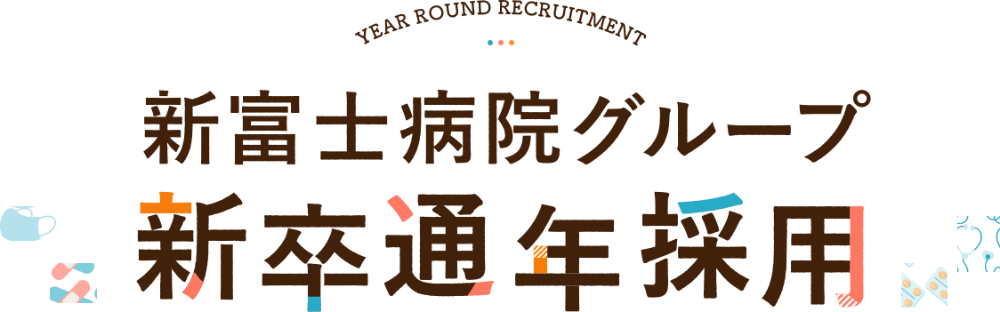
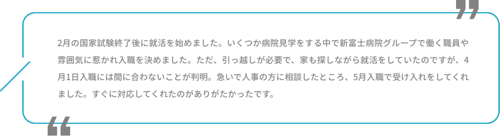
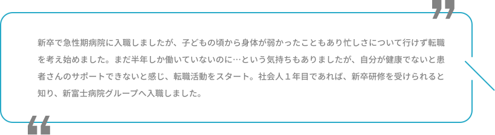
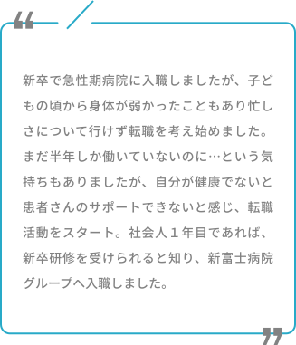

MESSAGE
メッセージ
これまで採用活動を行う中で、
2月の国試後に急いで病院を探す学生やせっかく4月に入職しても業務や環境が合わず、
早期に退職・転職活動する方を多く見てきました。
そんな方々とお会いするたびに、何かサポートできないだろうか？
患者さまを日々受け入れているのに、職員は年に１度だけ。
そんな採用方法にも疑問を感じていました。
そんな想いから、
新富士病院グループでは積極的に通年採用を実施いたします。
自分に合う仕事や働く環境、住まう環境も焦らずにゆっくり選んでほしい。
これから始まる長いキャリアに向けて
国試後にがんばった自分を存分に褒める時間を取ってもいいのです。
もし新富士病院グループを選んでくれたら、
一緒に新たなキャリアをスタートさせましょう。
新富士病院グループ: 採用担当

対象者
新富士病院グループの通年採用は、新卒者だけではなく社会人１年目の方も対象です。
社会人１年目の方も、新卒同様の教育研修を受けることが可能です。
採用フロー
エントリー後、施設見学会と面接を行います。
施設見学会は、先輩社員座談会を設ける場合がございます。
※面接は希望者のみ
よくある質問
Q. 入社日はいつですか？
A. 4月、6月、9月です。この中から入社時期を選択していただくことが可能です。
Q. 第二新卒(社会人１年目)の場合、研修は受けられますか？
A. 新卒入職と同じ研修を用意していますので、安心してご応募ください。入職後、ビジネスマナーや組織内コミュニケーション等の研修を実施したのち、配属先病院にて研修開始。4月・6月・9月に入職した職員で10月に集合研修を行います。
Q. 外国籍でも受験できますか？
A. 国籍による制約や制限は一切ありません
Q. 応募方法を教えてください。
A. こちらからご応募ください。
職員インタビュー
-
新卒5月入職者
 
-
  新卒9月入職者